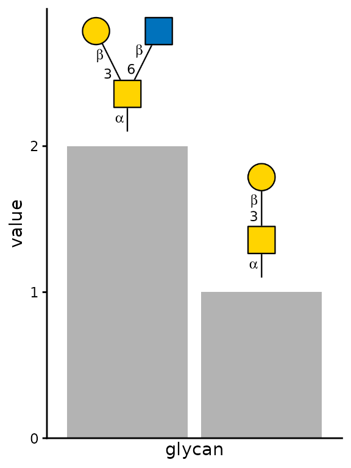
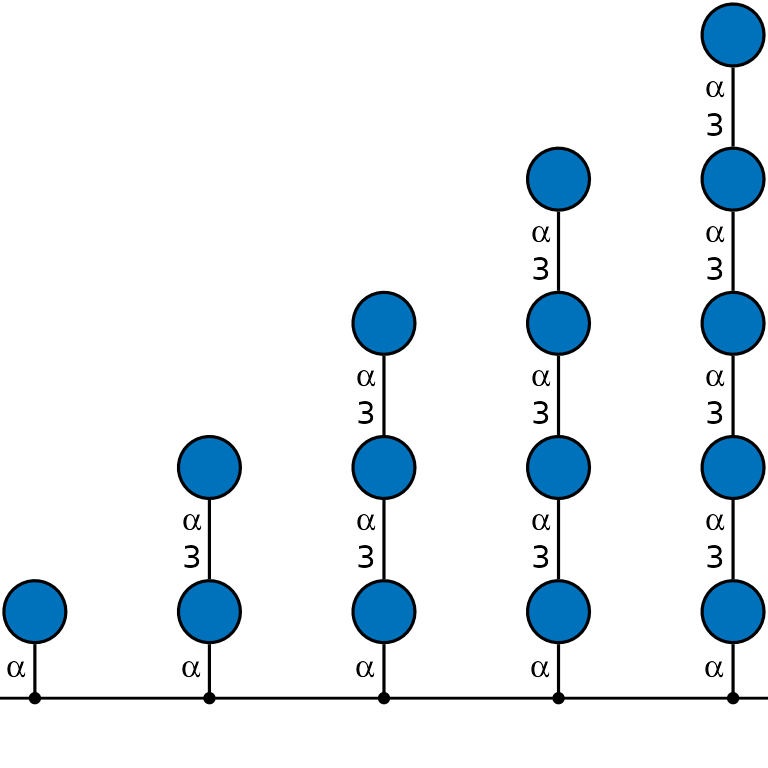
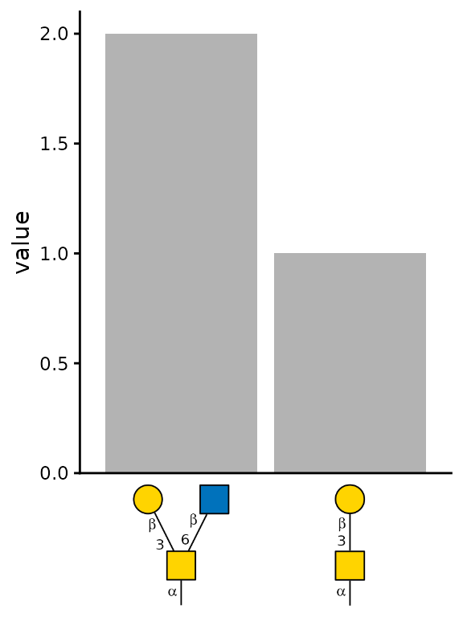
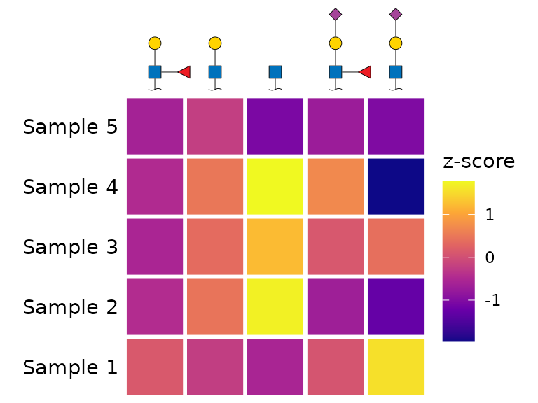
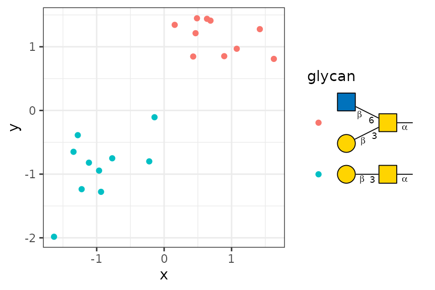

Plotting glycan SNFG cartoons is useful on its own. However, we often
want to include them in figures such as heatmaps or bar plots.
glydraw supports this use case with
geom_glycan(), scale_x_glycan() /
scale_y_glycan(), and guide_glycan().
library(glydraw)
library(tibble)
library(dplyr)
#>
#> Attaching package: 'dplyr'
#> The following objects are masked from 'package:stats':
#>
#> filter, lag
#> The following objects are masked from 'package:base':
#>
#> intersect, setdiff, setequal, union
library(ggplot2)
geom_glycan()
Let’s start with the simplest function, geom_glycan().
It is similar to geom_text() or geom_label(),
but plots glycan cartoons instead of text. Therefore, you need to
provide a third aesthetic in addition to x and
y, namely structure, just as you provide
label for geom_text().
plot_data <- tibble(
glycan = c("Gal(b1-3)GalNAc(a1-", "Gal(b1-3)[GlcNAc(b1-6)]GalNAc(a1-"),
value = c(1, 2),
)
ggplot(plot_data, aes(glycan, value)) +
geom_col(fill = "grey70") +
# ===== Important Here =====
geom_glycan(
aes(structure = glycan), # provide a `structure` aesthetic
orient = "V", # set orientation to vertical
size = 0.5, # default 1 is too large
vjust = 0, # aligned to bottom
position = position_nudge(y = 0.1)
) +
# ==========================
scale_y_continuous(expand = expansion(mult = c(0, 0.4))) +
theme_classic() +
theme(
axis.text.x = element_blank(),
axis.ticks.x = element_blank()
)
The structure aesthetic can be a character vector
supported by glyparse::auto_parse(), as in the example
above. It can also be a glyrepr::glycan_structure()
vector.
Technically, you can provide the structure aesthetic in
ggplot(), but we recommend using it only in
geom_glycan(), because other geoms simply ignore
structure. Keeping it in geom_glycan() also
makes the code more readable.
# Don't do this
ggplot(aes(x, y, structure = glycan)) +
geom_glycan()
# Do this
ggplot(aes(x, y)) +
geom_glycan(aes(structure = glycan))You may also have noticed that geom_glycan() inherits
all the styling arguments from draw_cartoon(). You will
often need to adjust these arguments, because placing glycan cartoons in
a figure requires careful attention to ensure that they look good
alongside the other components. There are no universal defaults.
With a little creativity, geom_glycan() can be used to
create a variety of plots.
plot_data <- tibble(
y = 0,
x = 1:5,
glycan = c(
"Glc(a1-",
"Glc(a1-3)Glc(a1-",
"Glc(a1-3)Glc(a1-3)Glc(a1-",
"Glc(a1-3)Glc(a1-3)Glc(a1-3)Glc(a1-",
"Glc(a1-3)Glc(a1-3)Glc(a1-3)Glc(a1-3)Glc(a1-"
),
)
ggplot(plot_data, aes(x, y)) +
# ===== Important Here =====
geom_glycan(
aes(structure = glycan),
size = 0.7,
vjust = 0,
orient = "V"
) +
# ==========================
geom_hline(yintercept = 0) +
geom_point() +
scale_y_continuous(expand = expansion(mult = c(0.05, 0.5))) +
theme_void()
scale_x_glycan() / scale_y_glycan()
These functions are similar to scale_x_discrete() and
scale_y_discrete(), except that they plot glycan cartoons
as “axis text”. To use them, set x or y to
glycan structures.
# the same example data above
plot_data <- tibble(
glycan = c("Gal(b1-3)GalNAc(a1-", "Gal(b1-3)[GlcNAc(b1-6)]GalNAc(a1-"),
value = c(1, 2),
)
# This time, we plot glycan cartoons below the x-axis.
ggplot(plot_data, aes(x = glycan, y = value)) +
geom_col(fill = "grey70") +
scale_x_glycan() + # The default values are good here.
scale_y_continuous(expand = expansion(mult = c(0, 0.05))) +
theme_classic() +
theme(
axis.ticks.x = element_blank(),
axis.title.x = element_blank()
)
Here is another example. scale_x_glycan() and
scale_y_glycan() can be useful for heatmaps.
set.seed(123)
plot_data <- tibble(
`z-score` = rnorm(25),
branch = rep(c(
"GlcNAc(??-",
"Gal(??-?)GlcNAc(??-",
"Neu5Ac(??-?)Gal(??-?)GlcNAc(??-",
"Neu5Ac(??-?)Gal(??-?)[Fuc(??-?)]GlcNAc(??-",
"Gal(??-?)[Fuc(??-?)]GlcNAc(??-"
), 5),
sample = rep(paste0("Sample ", 1:5), each = 5)
)
ggplot(plot_data, aes(branch, sample)) +
geom_tile(aes(fill = `z-score`), color = "white", linewidth = 1) +
scale_fill_viridis_c(option = "plasma") +
# ===== Important Here =====
scale_x_glycan(
position = "top",
size = 0.2,
show_linkage = FALSE,
red_end = "~"
) +
# ==========================
coord_equal() +
theme_void() +
theme(axis.text.y = element_text())
Notice that the signatures of scale_x_glycan() and
scale_y_glycan() set the hjust and
vjust defaults to hjust_red_end() and
vjust_red_end(), respectively. These defaults anchor the
cartoons in the heatmap at their reducing ends, rather than at their
centers. You can change hjust or vjust to a
numeric value if needed.
guide_glycan()
This function may be less commonly used than the functions above, which put glycan cartoons in the panel or on an axis, but it fills the gap of putting cartoons in a legend. It uses the recommended grammar from ggplot2 4.0.0. It may not work correctly with older versions of ggplot2.
set.seed(123)
plot_data <- bind_rows(
tibble(
x = rnorm(10, mean = -1, sd = 0.5),
y = rnorm(10, mean = -1, sd = 0.5),
glycan = "Gal(b1-3)GalNAc(a1-"
),
tibble(
x = rnorm(10, mean = 1, sd = 0.5),
y = rnorm(10, mean = 1, sd = 0.5),
glycan = "Gal(b1-3)[GlcNAc(b1-6)]GalNAc(a1-"
)
)
ggplot(plot_data, aes(x, y)) +
geom_point(aes(color = glycan)) +
guides(color = guide_glycan()) + # Done!
theme_bw()
geom_node_glycan()
There is also geom_node_glycan(), an extension to
ggraph. You can use it in place of
ggraph::geom_node_point() to plot glycan cartoons as nodes.
Everything else should be familiar now that you have seen the functions
above. Try it yourself!